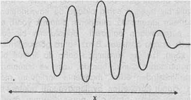
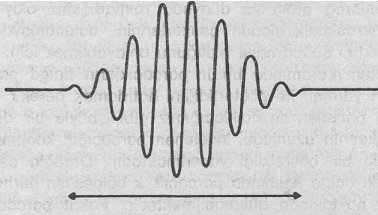
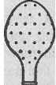
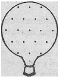
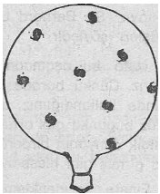

Doğu mistisizminin ana kaygısı, dünyadaki bütün fenomenleri aynı gerçekliğin farklı belirişleri olarak tecrübe edebilmektir. Söz konusu gerçeklik, evrenin özü olarak kabul edilmekte ve gözlemlediğimiz bütün olayların ve nesnelerin çokluğunun temeli ve de birleştiricisi olarak değerlendirilmektedir. Hindu'lar bu gerçekliğe Brahman, Buddhist'ler Dharmakaya (yani, Var Oluşun Bedeni) ya da Tathata (yani, Varlık), Taoistler de Tao demekte ve bunun zihinsel kavramlarımızı aştığını, daha kesin bir açıklamaya da imkân tanımadığını savunmaktadırlar. Ancak bu «son öz» (ultimate essence), sayısız bel irişlerinden ayrı olarak düşünülemez. Onun doğasında, kendisini sonsuz biçimlerde dışa vurma (beliriş) arzusu yatmaktadır. Yani, var olup, yok olmakta ve kendisini sonsuza değin değiştirmektedir. Fenomenal yönden, kozmik Tek, içsel bir dinamizme sahiptir ve bu dinamik doğanın kavranılması tüm Doğu mistisizm okullarının temel hedefi olmuştur. Bu konuda D. T. Suzuki, Mahayana Buddhizmi'nin Kegon okulu hakkında şunları yazmaktadır:
«Kegon'daki en büyük arzu, evreni dinamik bir biçimde yakalayabilmektir. Evrenin karakteri ise sürekli olarak hareketli kalmak ve her zaman hareket halinde olmaktır. Bu da, hayatta kalmakla aynı anlama gelir» (1).
Hareketliliğin, akışın ve değişimin bu kadar vurgulanması yalnızca Doğu'daki mistik geleneklerde değil, aynı zamanda yüzyıllar içinde görülen bütün diğer mistik dünya görüşlerinde de çok önemli bir yer tutar. Örneğin eski Yunanistan'da Heraklitus «her şey akıp gider» diyerek dünyayı sürekli olarak yanan bir ateşe benzetirken, Meksika'da yaşamış olan Yaqui mistikçisi Don Juan, «fani bir dünya»dan söz etmekte ve «bilge olmak için, ışık ve su olmak gerekir» demektedir(2).
Hint felsefesinde ise Hindu'ların ve Buddhistlerin kullandıkları ana kavramların tümünde dinamik bir ortaklık görülmektedir. Örneğin Sanskritçe'de Brahman kelimesi, «brih» (yani, büyümek) kökünden türetilmiş ve böylece dinamik ve canlı bir gerçekliğin düşünsel temelini oluşturmuştur. S. Radhakrişnan bu konuda şunları yazmaktadır: «Brahman kelimesi büyüme anlamına gelir; yani hayat, hareket ve gelişimin hatırlatıcısı gibidir»(3). Upanişad'lar ise Brahman konusunda, «biçimsiz ölümsüz ve hareketli olan»(4) demekte ve böylece Brahman'ı bütün biçimleri aşabilen bir hareketlilikle bağdaştırmaktadırlar.
Rig Veda ise, evrenin dinamik doğasını anlatabilmek için daha değişik bir terim kullanmaktadır: Bu, «Rita» terimidir. Bu kelime «ri» (yani, hareket etmek) kökünden gelmektedir. Rig Veda'daki orijinal anlamı ise, «tüm nesnelerin yolu», «doğanın düzeni» biçimindedir. Veda destanlarında önemli bir rol oynayan Rita, tüm Veda Tanrı'ları ile de ilişkilidir. Evrensel düzen, Veda bilginlerince statik bir Tanrı'sal yasa olarak değil, evrenin kendisinde bulunan dinamik bir ilke olarak görülmekteydi. Bu görüş, Çin'deki Tao (yani, yol) anlayışından pek de farklı değildir.
Çünkü burada da evrenin hareket yolu, yani doğanın düzeni anlatılmaya çalışılmıştır. Veda bilginlerine benzer biçimde Çin bilginleri, dünyayı bir akış ve değişim bütünü olarak görmekte ve böylece de kozmik düzen fikrine dinamik bir temel kazandırmaktaydılar. Her iki görüş de yani hem Rita ve hem de Tao, daha, sonraları kozmik düzeylerden insansal düzeylere indirilmişler ve ahlâki bir çerçevede yorumlanmışlardır. Böylece Rita, tüm Tanrı'ların ve özellikle erkeklerin uyması gereken evrensel bir yasa olarak ve Tao da, gerçek ve doğru hayat tarzı şeklinde, değerlendirilmeye başlanmıştır.
Veda'daki Rita kavramı daha sonraları geliştirilen ve nesneler ile olaylar arasındaki dinamik etkileşimi açıklayan «karma» fikrinin doğmasına yol açmıştır. «Karma» kelimesi aslında «hareket» anlamındadır ve tüm fenomenler arasındaki «hareketli» ya da dinamik etkileşimi anlatmaya çalışmaktadır. Bhagavad Gita'nın sözleriyle: «Tüm hareketler, zaman içinde ve doğadaki bütün kuvvetlerin karışımı ile oluşurlar» (5). Buddha ise, «karma» nın geleneksel yaklaşımını ele aldıktan sonra, onun dinamik etkileşimler ve bağlantılar fikrini insan boyutunda yorumlamıştır. Böylece «karma», insan hayatındaki sebep ve sonucun bitmeyen zinciri olarak görülmeye başlanmıştır. Buddha ise, bu zinciri kırarak aydınlanma durumuna erişebilmiş bir insandır.
Hinduizm ise, evrenin dinamik doğasını mitolojik bir dil kullanarak açıklamaya çalışmıştır. Buna göre Krişna, Gita'da şunları söylemektedir: «Ben hareket halinde olmasam, bu dünya yok olup giderdi»(6). Bu anlamda Şiva, yani Kozmik Dansçı, dinamik evrenin belki de en iyi biçimde kişileştirilmiş olan bir Tanrı'sıdır.
Şiva, icra ettiği dans ile, dünyadaki sonsuz fenomenleri besler, ve ritmiyle, bu fenomenlerin süregelen dansa katılmalarımı sağlayarak onları birleştirip, bütünleştirir. Bence bu, evrenin dinamik doğası ne ilgili çok olağanüstü bir görüştür.
Hinduizm öğretisinden ortaya çıkan genel görünüm; organik, büyüyen ve ritmik olarak hareket eden bir kozmos olgusudur. Bu evrende, her şey akıcıdır, sürekli olarak değişmektedir. Buradaki tüm durağan biçimler «maya», yani hayalî kavramlardır. Bu görüş, yani tüm biçimlerin süreksizliği ise Buddhizm'in hareket noktasını oluşturmuştur. Buddha, «bileşik haldeki tüm nesneler süreksizdir» demiş ve dünyadaki bütün ızdırapların, söz konusu sabitleştirilmiş biçimlere (yani, nesnelere, insanlara ya da fikirlere) kenetlenmekten ve bağlanmaktan dolayı ortaya çıktığını savunmuştur. Demek ki Buddhizm'in kökünü ve temelini, dinamik bir dünya görüşü oluşturmaktadır. S. Radhakrişnan'ın sözleriyle:
«Yaklaşık 2.500 sene önce Buddha tarafından, olağanüstü bir dinamizm felsefesi geliştirilmiştir. Nesnelerin geçiciliğinden, onların durmak bilmeyen değişim, dönüşüm (transformasyon) ve başkalaşımlarından çok etkilenen Buddha, zamanla bu değişimin felsefesini geliştirmeye koyulmuş ve sonuçta gerçekliğin dinamik bir kavramışını tanımlayabilmiştir» (7).
Buddhist'ler, durmaksızın değişen bu dünyayı «samsara», yani kelime anlamı ile (durmayan hareket) olarak adlandırmışlardır. Ayrıca bu dünyada, ona bağlanabileceğimiz kadar değerli ve önemli hiç bir şeyin bulunmadığını da ortaya atmışlardır. Bundan dolayı aydınlanmış birisi ya da bir Buddhist, hayatın akışına ayak direten biri değil, tam tersine, ona canı gönülden eşlik eden birisidir. Ch'an rahibi Yün-men'e, «Tap nedir?» diye sorulduğunda, «haydi, yürümeye başla!» diye cevap vermiştir. Bu nedenle Buddhist'ler, Buddha'ya Tathagata ya da «gelen ve öylece giden» demektedirler. Çin felsefesinde ise, akan ve sürekli olarak değişen gerçeklik «Tao» olarak isimlendirilmiş ve tüm nesnelerin dahil olduğu kozmik bir süreç olarak görülmüştür. Taoistler, Buddhistlerde olduğu gibi, insanların bu akışa karşı direnç göstermemelerini telkin etmekte ve tüm davranışlarını buna göre ayarlamalarını önermektedirler. Böylesi bir davranış bilge bir kişinin, yani aydınlanmış insanın, karakteristik bir niteliğidir. Eğer Buddha «gelen ve öylece giden» ise, Taoist bilge de, Huai Nan Tzu'nun dediği gibi, «Tao'nun cereyanında akıp, giden»dir.
Hindu'ların, Buddhist'lerin ve Taoist'lerin dinsel ve felsefî yazıları incelendikçe, onların neredeyse hepsinde dünyanın; hareket, akış ve değişim gibi terimlerle açıklanmış olduğu görülür. Doğu felsefesinin bu dinamik niteliği, belki de onun en önemli özelliği gibidir. Doğu mistikçileri evreni, aralarındaki bağlantıların durağan olmadığı, dinamik bir biçimde örülmüş olan ve birbirinden ayrı şamaya n bir ağ olarak görmektedirler. Yani kozmik ağ, hayat doludur, hareket eder, büyür ve sürekli olarak değişir. Modern fizik de evreni, tıpkı buna benzer bir ilişkiler ağı olarak algılamaya başlamıştır. Doğu mistisizminde olduğu gibi, bu kozmik ağın, içsel olarak dinamik bir niteliğe sahip olduğu da kavranabilmiştir. Kuantum kuramında, maddenin dinamik yönü, atom-altı parçacıkların dalgasal doğalarının bir sonucu olarak ortaya çıkmıştır. Biraz sonra göreceğimiz gibi, bu konu, izafiyet kuramında daha da önemli bir rol oynamaktadır. Çünkü burada, uzay ve zamanın birleştirilmesinden ötürü, maddenin varlığının, «maddenin yaptığı hareketten ayrılamayacağı gösterilmiştir. Bundan dolayı, atom-altı parçacıklarının özellikleri ancak dinamik bir çerçevede, yani hareket, etkileşme ve aktarma gibi terimler kullanılarak anlaşılabilmiştir.
Kuantum kuramına göre parçacıklar, aynı anda da birer dalga gibidirler. Bu ise onların, çok özgün bir biçimde davranacakları sonucunu ortaya çıkarmaktadır. Örneğin atom-altı bir parçacık, küçük bir uzay bölgesine sıkıştırıldığında buna çevresinde dönerek cevap vermektedir. Sıkıştırılma (ya do hapsolma) bölgesi ne kadar küçükse, parçacık bu bölgenin içinde o kadar fazla «zıplamaktadır». Bu davranış, tipik bir «Kuantum etkisi» örneğidir. Böyle durumlarda atom-altı dünyada rastladığımız olayların makroskopik alanda benzerlerinin bulunamayacağı açıktır. Bunun nasıl olduğunu anlayabilmek için, Kuantum kuramında bütün parçacıkların dalga paketleri yardımı ile gösterildiğini hatırlamak gerekir. Daha önceden de açıkladığımız gibi, böyle bir dalga paketinin uzunluğu, incelenen parçacığın konumuyla ilgili bir belirsizliği yansıtmaktadır. Örneğin aşağıdaki dalga kalıbında parçacık x bölgesinin herhangi bir noktasında bulunabilmektedir. Fakat parçacığın tam- ve kesin olarak nerede bulunduğunu söylemek mümkün değildir.

Bir dalga paketi
Eğer parçacığın konumunu daha iyi belirlemek istiyorsak, yani onu daha küçük bir bölgeye sıkıştırırsak, parçacığın dalga paketini daha dar bir bölge içine almak gerekir. Ancak böyle yapmakla, dalga paketinin dalga boyunu ve buna bağlı olarak da parçacığın hızını etkilemiş oluruz. Yani sonuç olarak, parçacık kendi çevresinde dönmeye başlayacak ve biz onu ne kadar fazla sıkıştırmaya çalışsak, o da o kadar hızlı dönmeye kalkacaktır.

Bir dalga paketini küçük bir bölgeye sıkıştırmak
Parçacıkların, sıkıştırılmaya hareketle cevap verme eğilimleri, atom-altı dünyanın karakteristik bir niteliği olan temel bir «durgunsuzluk» özelliğini akla getirmektedir. Dünyamızdaki maddesel parçacıkların büyük bir bölümü, moleküler, atomik ya da çekirdeksel (nükleer) yapılara bağlanmışlardır ve bu nedenle de durgun değildirler. Böylelikle, durmadan hareket etme eğilimini, yani içsel bir durgunsuzluğu içermektedirler. Kuantum kuramına göre, madde, hiç bir zaman durağan değil, tam aksine, sürekli bir hareket durumundadır. Çevremizde bulunan nesneler, makroskopik açıdan edilgen ve cansız gibi görünseler bile, bir «ölü» taşı ya da demiri büyülttüğümüzde, aslında tam bir hareketlilik curcunasına sahip olduklarını müşahade ederiz. Bunlara ne kadar yakından bakarsak, canlılıkları da o kadar artacaktır. Çevremizdeki tüm maddesel nesneler, birbirleriyle farklı biçimlerde bağlar kuran ve böylece moleküler yapıların olağanüstü çeşitliliğini meydana getiren, değişmez ve hareketsiz olmayan, ancak ısıya bağlı olarak salınan ve titreşen, çevresindeki ısısal titreşimlere ayak uyduran atomlardan oluşmaktadırlar. Titreşen atomlardaki elektronlar da atom çekirdeğine elektriksel kuvvetlerle bağlanmışlardır. Bu kuvvetler, elektronları kendisine mümkün olduğu kadar yakın tutmaya çalışırlar. Elektronlar ise, bu sıkıştırılmaya tepki olarak büyük bir hızla dönerek cevap verirler. Atomun çekirdeğinde bulunan protonlar ve nötronlar, çok küçük bir hacme, nükleer kuvvetler denilen kuvvetler tarafından sıkıştırılmışlardır. Bunun sonucu olarak çekirdeği oluşturan bu parçacıklar, hayal edilemeyecek büyüklükteki hızlarla hareket edip, durmaktadırlar.
Yani modern fizik, maddeyi hiç de edilgen ve cansız olarak değil, tam aksine, sürekli bir dans ve titreşim hareketine sahip olarak görmektedir. Bu dans ve hareketin ritmik kalıpları ise, maddenin moleküler, atomik ve nükleer yapılarınca belirlenmektedir. İşte bu, Doğu mistikçilerinin maddesel dünyayı algılama biçimlerinin aynısıdır. Onlar evrenin ancak dinamik biçimde kavranabileceğini vurgulamışlar ve evreni hareket eden, titreşen ve dans eden bir bütünlük olarak görmeye çalışmışlardır. Onlara göre doğa, durağan değil, dinamik bir dengeye sahiptir. Taoist bir yazıda belirtildiği gibi:
«Sessizlikteki sessizlik gerçek sessizlik değildir. Ancak hareketteki sessizlik ortaya çıkarsa, gök ve yeri saran ruhani ritim algılanabilir» (8).
Öte yandan fizik dalında evrenin dinamik doğası, yalnızca küçük boyutlara (yani, atomların ve çekirdeklerin dünyasına) inildiğinde karşımıza çıkmamaktadır. Büyük boyutlarda da, yani yıldız ve galaksilerin dünyasına geçildiğinde de, karşımıza yine bu dinamik anlayış çıkmaktadır. Sahip olduğumuz güçlü teleskoplar, bize durmaksızın hareket eden bir evreni göstermektedir. Dönen hidrojen gaz bulutları, büzülerek yıldızları oluşturmakta, bu süreç içinde bulut ısınmakta ve sonuç olarak gökyüzünde asılı gibi duran yepyeni yıldızlar meydana gelmektedir. Yıldızlar bu durumda da dönmeye devam ederler. Bunlardan bazıları dışarıya madde püskürtmekte ve böylece yıldızın çevresinde dönen bazı gezegenlerim oluşmasına sebep vermektedirler. Milyonlarca yıl geçtikten sonra yıldızın hidrojen yakıtı bitmekte ve bunun üzerime söz konusu yıldız genişlemeye başlamaktadır. Nihayet yerçekimsel çöküş sırasında son bir defa daha küçülmekte, bu küçülme büyük bir patlamaya da sebep olabilmekte ve bazı hallerde bu patlamadan sonra incelediğimiz yıldız, bir kara delik şekline dönüşmektedir. Bu faaliyetlerin hepsi (yani, yıldızlar arası gaz bulutlarından yıldızların oluşumu,, yıldızların büzülmesi ve daha sonraki genişlemeleri ve sonra da yok oluşları) gerçekten - de gökyüzünün çeşitli yerlerinde bilimsel gözlemlerle tespit edilebilmişlerdir.
Dönen, büzülen, genişleyen ya da patlayan yıldızlar, çok çeşitli biçimlere sahip galaksiler (örneğim, disk biçimi, küre biçimi spiral biçimi, vs) meydana getirmektedirler. Bu galaksiler de hareketsiz olarak durmamakta, kendi çevrelerinde dönel bir hareket göstermektedirler. Bizim içinde bulunduğumuz Samanyolu galaksisi, uzayda çok sayıda yıldızlardan ve çok miktarda gazlardan oluşan büyük bir tekerleğe benzemektedir. Bundan dolayı Samanyolu'nda bulunan bütün yıldızlar (güneşimiz ve onun gezegenleri de dahil), durmaksızın galaksinin merkezi çevresinde dönmektedirler. Gerçekten de evren, görebildiğimiz uzayın her bir yanına dağılmış galaksilerle doludur. Bunların hepsi de bizim galaksimizde olduğu gibi, kendi çevrelerinde dönmektedirler.
Eğer evreni, sahibi bulunduğu milyonlarca galaksilerle bir bütün olarak incelersek, uzay ve zamanın en büyük ve kapsamlı ölçeğine ulaşmış oluruz, işte bu kozmik düzeyde bile evrenin statik olmadığımı keşfedebiliriz, çünkü evrenim kendisi de genişlemektedir! Bu, modern astronomimin en önemli buluşlarından birisidir. Uzak galaksilerden gelen ışığın detaylı bir analizi sonucumda, tüm galaksilerin genişledikleri ve birbirlerinden uzaklaştıkları anlaşılmıştır. Söz konusu hareket, çok muntazam bir bütünlük içinde cereyan etmektedir. Nitekim, buna göre, gözlemlediğimiz herhangi bir galaksinin uzaklaşma hızı, onun bize olan uzaklığı ile orantılıdır. Bir galaksi bizden ne kadar uzaktaysa, bizden o kadar büyük bir hızla uzaklaşacaktır. Eğer uzaklık belirli bir mesafenin iki katı ise, uzaklaşma hızı da o mesafede-kinden iki kat daha fazla olacaktır. Bu, yalnızca galaksimizden yapılan uzaklık ölçümleri için değil, ayrıca herhangi bir referans noktası için de aynen geçerlidir. Hangi galakside bulunursak bulunalım, diğer galaksilerin bizden uzaklaştıklarını gözlemleyebiliriz. Yani yakın galaksiler saniyede birkaç bin mit ile, daha uzaktakiler daha yüksek bir hız ile ve en uzaktakiler de ışık hızına yakın bir hızla bizden uzaklaşmaktadırlar. Bu uzaklığın ötesindeki galaksilerin ışığı ise, bize hiç bir zaman ulaşamayacaktır, çünkü onlar, ışıktan daha hızlı bir biçimde bizden uzaklaşmaktadırlar. Sir Arthur Eddington'un dediği gibi, onların ışığı, «bitiş noktası kendisinden sürekli uzaklaşan bir koşucu gibidir.»
Evrenin neyin içinde genişlediğini daha iyi anlayabilmek için, onun sahip olduğu büyük çaplı özelliklerin Einstein’ın Genel izafiyet Kuramı aracılığıyla ortaya koyduğu temeller doğrultusunda hatırlanması gerekecektir. Bu kurama göre uzay, «düz» değil «eğiktir. Bu eğikliğin kesin biçimi, evrendeki maddenin dağılımı ve «Einstein Alan Denklemleri »m in aracılığı ile belirlenebilmektedir. Bu denklemler, bize evrenin yapısını bir bütün olarak değerlendirmek ve belirlemek imkânını vermektedirler.
Genel izafiyet Kuramı çerçevesinde, genişleyen bir evrenden söz ettiğimizde daha üst bir boyuttaki genişlemeden söz ederiz aslında. Eğik uzay kavramında olduğu gibi, böyle bir kavramı da yalnızca iki boyutlu bir analoji yardımı ile gözümüzün önünde canlandırabiliriz. Üzerinde çok sayıda noktaların bulunduğu bir balonu düşünün. Bu balon evreni temsil etsin (iki boyutta eğilmiş olan yüzeyi üç boyutlu uzayı, noktalar da evrendeki galaksileri simgelesin). Balonumuz şişirildiğinde, tüm noktalar arasındaki uzaklık büyüyecektir. Üzerinde bulunduğumuzu varsaydığımız herhangi bir nokta da, diğer bütün noktalardan uzaklaşıyormuş gibi gözükecektir. Evren de buma benzer biçimde genişlemektedir: Gözlemci hangi galakside bulunursa bulunsun, diğer bütün galaksiler ondan uzaklaşıyorlarmış gibi görünecektir.
  
Tabii burada genişleyen evren ile ilgili şu çarpıcı soruyu da sormamız gerekecektir: Bunların hepsi nasıl başladı? Galaksilerin uzaklaşma hızlarına ve uzaklaşma hareketlerine dayanılarak (buna Hubble Yasası da denir) bu genişlemenin başlangıç noktası hesaplanabilir. Yani başka bir deyişle, evrenin yaşı bulunabilir. Genişlemede hiç bir değişikliğin baş göstermediğini kabul edersek, (ki bu kesinlik kazanmamıştır) yaklaşık olarak on bin milyon senelik bir evren yaşı ile karşılaşırız. Yani evren, bu kadar yaşındadır. Günümüzde kozmolojistler, içinde bulunduğumuz evrenin, gerçekten de on bin milyon sene önce yaşanan dramatik bir olayla ortaya çıktığına inanmaktadırlar. Bu olayda, evrende bulunan kütlenin tamamı, küçücük bir ateş topundan patlayarak ortaya çıkmıştır. Evrenin günümüzde kaydedilen genişleme hareketi ise, bu ilk patlamadan arta kalan tiş kuvvetinin devamı olarak değerlendirilmektedir. «Big bang» (yani, büyük patlama) modeline göre, söz konusu büyük patlama, evrenin, uzayın ve zamanlın başlangıcını oluşturmuştur. Patlama anından önce ne olduğunu öğrenmek istediğimizde, yine düşünme ve konuşma zorluklan ile karşı karşıya kalmaktayız. Sir Bernard Lovell'in bu konu hakkındaki görüşleri şöyledir:
«İşte bu aşamada düşüncenin büyük sınırına ulaşırız. Çünkü burada günlük tecrübelerimiz çerçevesinde kullandığımız uzay ve zaman kavramları, -henüz bugünkü gibi ortada değildirler. Kendimi sanki alışıldık dünyanın birdenbire kaybolduğu bir sis bulutuna girmiş gibi hissediyorum» (9).
Einsten'ın denklemleri, sürekli olarak genişlemen evrenin geleceği hakkında yeterli bir cevap sağlayamamaktadırlar. Çünkü denklemlere göre, evrenin farklı modellerine denk düşen farklı çözümler ortaya çıkmaktadır. Bu modellerden bazıları genişlemenin sonsuza kadar süreceğini, diğerleri ise hareketin yavaşlayacağını ve belki de ters dönüp büzülmeye dönüşeceğini öngörmektedirler. Ama modellerin hepsi de salınan bir evreni tanımlamaktadırlar. Şöyle ki: Bir kaç milyar yıl süreyle evren genişlemekte, daha sonra bütün kütlesi küçücük bir madde topuna dönüşene kadar büzülmekte, bunu takiben yeniden genişlemekte ve böylece sonsuza değin salınıp, durmaktadır.
Devirsel olarak genişleyen ve büzülen bir evren görüşü (ki burada inanılmaz zaman ve uzay ölçekleri söz konusudur), yalnızca modern kozmolojide değil, aynı zamanda eski Hint mitolojisinde de ortaya atılmıştı. Evreni, organik ve ritmik olarak hareket eden bir kozmos biçiminde tecrübe eden Hindu'lar, modern bilimsel modellerimize çok yaklaşan evrimsel kozmolojiler geliştirebilmişlerdir. Bu kozmolojilerden bir tanesi, Hindu'ların «lila» (yani, Tanrı'sal oyun) isimli mitosuna dayanmaktadır. Buna göre Brahman, kendisini dünya haline dönüştürmüştür ve «lila» sonsuz devirlerle gerçekleşen ritmik bir oyundur. Tek olan, çok olur ve daha sonra çok olan Tek olur. Bhagavad Gita'da Tanrı Krişna yaradılışın ritmik oyununu şu sözlerle anlatmaktadır:
«Zaman karanlığının sonunda tüm nesneler yine benim doğama geri dönerler. Zamanın aydınlığı yeniden geldiğinde ise, ben onları ışığa yöneltirim.
Böylece ben, doğam yardımı ile tüm yaradılışı gerçekleştiririm ve bunu da zamansal devirler içinde yaparım.
Çünkü yalnızca ben varım ve yalnızca ben bu faaliyetin oyununu izlerim.
Ben bu oyunu izlerken, evrenin yaradılışındaki hareketli ve hareketsiz her şeyi ortaya çıkarırım. Ve böylece dünyanın devirleri sürüp gider» (10).
Hindu bilginleri, bu ritmik ve Tanrı'sal oyunu, kozmos bütününün evrimi ile özdeşleştirmekten de çekinmiyorlardı. Bundan dolayı bu bilginler, evreni devirsel olarak genişleyen ve büzülen bir bütün olarak resmediyorlar ve yaradılışın başlangıcı ve bitişi arasındaki hayal edilemeyecek uzunluktaki zaman dilimine da «kalpa» diyorlardı. Bu eski mitosun kapsamı ve ileri görüşü gerçekten de şaşırtıcıdır. Buna benzer kavramları yeniden ortaya atabilmek için insan beyni, iki bin sene beklemek zorunda kalmıştır.
En büyük ölçekteki dünyadan, yani genişleyen evrenden gelin, yine en küçüklerin dünyasına geri dönelim. Yirminci yüzyılın fiziği, sürekli olarak artan bir atom-altı boyutlara dalma macerasına tanık olmuştur. Atomların, çekirdeklerin ve bunları oluşturan öğelerin hükümranlık alanlarının incelenmeye başlanması, insanlığın en ilginç serüvenidir. Atom-altı (dünyanın araştırılması, insan aklını binlerce yıl meşgul ederek, onu inanılmaz biçimde teşvik eden çok temel bir soru çerçevesinde yürütülmüştü: Madde neden oluşmaktadır? Doğa felsefesinin başından beri, insanoğlu bu konu hakkında bir çok görüş ileriye sürmüş ve tüm maddelerin özünü oluşturan «temel öğeyi» bulmaya çalışmıştır. Ancak içinde bulunduğumuz yüzyılda, deneyler yapılarak bu soruya cevap verilmeye başlanmıştır. Çok karmaşık ve ileri teknolojiler yardımı ile fizikçiler ilk önceleri atomların yapılarını inceleyerek, onların çekirdek ve elektronlardan oluştuklarını belirleyebilmişler, daha sonra atom çekirdeğinin yapısını araştırmışlar, bunların da proton ve nötronlardan (yani, nükleonlardan) oluştuklarını bulmuşlardır. Son yirmi senedir de fizikçiler bir adım daha ileriye atarak, nükleonların yapısını araştırmaya koyulmuşlardır. Bu noktada atom çekirdeğinin öğelerini oluşturan nükleonların da nihaî elemanter parçacıklar olmadıkları ve diğer varlıkların bileşiminden ortaya çıktıkları hayretle anlaşılmıştır.
Maddenin/ daha derin katmanlarına inildikçe (atomların dünyası araştırıldıkça), daha önceki bölümlerde de anlattığım gibi, madde hakkındaki genel görüşlerimizde büyük değişimler meydana gelmişti. Daha sonra ise atom çekirdeğine ve atom çekirdeğini oluşturan öğelere doğru atılan adımlar geldi. Bunum sonucunda da görüşlerimizde önemli değişiklikler oluşmuştu. Çünkü söz konusu dünyada, atomsal ölçeklerden yüz bin kere daha küçük olan ölçeklerle uğraşılmakta ve buna bağlı olarak da, bu kadar küçük bölgelere sıkıştırılmış olan parçacıkların, atomsal bölgelere sıkıştırılmış olan parçacıklardan çok daha büyük hızlara erişebildikleri görülmekteydi. Gerçekten de nükleonlar, yalnızca Özel izafiyet Kuramı çerçevesinde tam anlamı ile açıklanabilecek kadar yüksek hızlarda hareket etmektedirler. Bu nedenle atom-altı parçacıkların özelliklerini ve etkileşim biçimlerini anlayabilmek için, hem Kuantum kuramını ve hem de izafiyet kuramını kapsayan bir genel bakış çerçevesine ihtiyaç vardır. Kullandığımız izafiyet kuramından ötürü de, madde hakkındaki görüşlerimizde bir kez daha değişiklikler yapmak zorunda kalmaktayız.
Daha önce de değindiğim gibi, izafiyet çerçevesinin en karakteristik özelliği, önceleri tümü ile ilgisiz gibi görünen kavramları bir çırpıda birleştirmiş olmasıdır. Bu önemli örneklerden biri, kütle ile enerjinin eşitliğidir. Bu eşitlik, Einstein’ın ünlü E = mc2 denklemi ile gösterilmektedir. Bu eşitliğin önemini kavrayabilmek için, ilk önce enerjinin ve maddenin ne olduğunu anlamamız gerekmektedir.
Enerji, doğal fenomenleri açıklamak için kullanılan kavramlardan en önemlisi gibidir. Günlük yaşamda olduğu gibi, bir işi yapabilme kapasitesine sahip cisimlere, enerjiye sahip cisimler demekteyiz. Bu enerji, çok çeşitli biçimlerde karşımıza çıkabilir. Hareket enerjisi, ısı enerjisi, kimyasal enerji ve benzerleri gibi. Örneğin bir taşı belirli bir yüksekliğe kaldırmak, ona yerçekimsel enerji kazandırmaktadır. Taşı bu yükseklikten bıraktığımızda, sahip olduğu yerçekimsel enerji, hareket enerjisine (kinetik ener iye) dönüşmekte, taş yere çarptığında ise bir cismi kırarak bir iş yapabilmektedir. Ya da daha çarpıcı bir örnek kullanarak, elektrik enerjisinin veya kimyasal enerjinin dönüştürülüp ev işlerinde yararlı olabilmelerini gösterebiliriz. Demek ki fizik dalında, enerji her zaman belirli bir süreçle ya da belirli bir faaliyetle ilişkilendirilmektedir. Buradaki en temel özellik, bir süreç içindeki toplam enerji miktarının her zaman aynı kalması, yani korunmasıdır. Belki elimizdeki enerji, biçimini değiştirebilir, ama hiç bir zaman ortadan kaybolmaz. Bu yüzden enerjinin korunması, fiziğin en temel yasaları arasına girmiştir. Bu yasa, bütün doğal fenomenleri yönetmektedir ve şu ana kadar hiç bir fenomen bu yasaya aykırı davranmamıştır.
Öte yandan bir cismin kütlesi, onun ağırlığının bir ölçüsüdür. Yani herhangi bir cisme uygulanan, yerçekimsel kuvvetin bir ölçüsüdür. Bunun yanında kütle, cismin ataletini de ölçer, yani cismin ivmeye karşı gösterdiği direnci belirler. Böylece ağır cisimler, hafif cisimlere oranla daha zor hareket ettirilebilmektedirler. Bu olgu, bir arabayı itmek zorunda kalmış olan herkes tarafından doğrulanacaktır. Klasik fizikte kütle, ayrıca parçalanamayan maddesel öz ile birlikte ele alınmaktaydı. Yani tüm nesnelerin temelini oluşturan «şey» ile kütle arasında da bir bağ vardı. Enerjide olduğu gibi, kütlenin de bütünü ile korunduğu düşünülüyor, yani hiç bir kütlenin kaybolmayacağı varsayılıyordu.
Fakat öte yandan, izafiyet kuramı, bize maddenin, aslında enerjinin bir biçiminden başka bir şey olmadığını göstermiştir. Enerji, klasik fizikte gördüğümüz çeşitli biçimlerin dışında ayrıca bir nesnenin kütlesi olarak da ortaya çıkmaktadır. Örneğin bir parçacığın içerdiği enerji miktarı, parçacığın kütlesi ile (yani, m ile), ışık hızının karesinin (yani, c2'nin) çarpımına eşittir. Böylece şu denklem ortaya çıkmaktadır:
E = mc2
Kütle, artık enerjinin bir biçimi olduğu için, parçalanamaz olmaktan uzaklaşır ve diğer enerji biçimlerine dönüştürülebilir. Bu dönüşüm, atom-altı parçacıkların çarpışmaları sırasında rahatlıkla gözlenmektedir. Bu tür çarpışmalarda, parçacıklar parçalanmakta ve kütlelerinde saklı olan enerji de, kinetik enerji biçimine dönüşüp, çarpışma sonucunda elde edilen yeni parçacıklar arasında dağıtılabilmektedir. Yani yüksek hızlarla çarpışan parçacıkların kinetik enerjileri yardımı ile yeni oluşan parçacıkların kütleleri meydana getirilebilmektedir.
Kütle ve enerji eşitliğinin belki de en şaşırtıcı yönü maddesel parçacıkların oluşmaları ve yok oluşları sırasında ortaya çıkar. Çünkü yüksek enerji fiziğinde oluşturulan çarpışma süreçlerinde, artık kütlenin korunması söz konusu değildir. Çarpışan parçacıklar parçalanabilir ve kütlelerinin bir bölümü de yine kütleye, diğer bir bölümü ise yeni oluşan parçacıkların kinetik enerjisine dönüşebilir. Böyle bir süreç içinde, toplam enerji korunmakta, yani toplam kinetik enerji ile tüm kütlelerdeki saklı enerji sabit kalmaktadır. işte bu yüzden atom-altı parçacıkların özelliklerini incelerken, çarpışma deneylerini birinci derecede gözlem araçları olarak kullanabilmekte ve kütle ile enerji arasında ortaya çıkan ilişkiden de onların açıklanması için güzel bir biçimde yararlanmaktayız. Sayısız kereler deneylerle ispatlanmış olan kütle ve enerji eşitliği, parçacık fizikçilerinin vazgeçilemez bir yardımcısı haline gelmiştir. Artık parçacık fizikçileri bu eşitliğe o kadar alışmışlardır ki, parçacıkların kütleleri bile, onlara denk düşen enerji birimleri ile ifade edilmeye başlanmıştır.
Kütlenin esasen enerjinin bir biçiminden başka bir şey olmadığının keşfedilmesi, parçacıklar hakkındaki kavramlarımızın önemli ölçüde değişmesine neden olmuştur. Artık modern fizikte kütle, maddesel bir öz ile bağlı tutulmamakta ve bundan dolayı da parçacıkların temel bir «maddeden» oluşmadıkları kabul edilmektedir. Artık parçacıkların bir enerji demeti olarak algılanmasına başlanmıştır. Fakat enerji, faaliyetle ya da süreçle ilişkili olduğundan, neticede atom-altı parçacıkların doğasının da içsel olarak dinamik olduğu düşünülmeye başlanmıştır. Bunu daha iyi anlayabilmemiz için, söz konusu parçacıkların, yalnızca bazı izafiyet terimleri ile (yani, uzay ve zamanın dört boyutlu bir süreklilikte birleştiği bir kavrayışın içerdiği terimlerle), açıklanabildiklerini hatırlamamız gerekmektedir. Parçacıklar artık durağan birer üç boyutlu nesne olarak (bilardo topları ya da kum tanecikleri gibi) algılanmamalı, dört boyutlu uzay-zaman varlıkları olarak ele alınmalıdırlar. Biçimleri ise, dinamik olarak uzay ve zaman içinde oluşan biçimler olarak görülmelidir. Atom-altı parçacıklar, uzay ve zaman öğesine sahip, dinamik kalıplar gibidirler. Söz konusu uzay öğesi onları belirli bir kütleye sahip bir nesne gibi göstermekte, öte yandan zaman öğesi de onların belirli bir enerjiye sahip bir süreç olarak görünmelerine neden olmaktadır.
Bu dinamik kalıplar, ya da «enerji demetleri» maddeyi meydana getiren ve ona makroskopik açıdan sert bir görünüm sağlayan sağlam nükleer, atomik ve moleküler yapıları oluşturmaktadırlar. Böylece biz de, maddenin bir takım maddesel özlerden meydana geldiği gibi hatalı bir sonuca varmaktayız. Makroskopik düzeyde söz konusu «öz» yaklaşımı çok faydalı bir açıklamadır. Ama bunu atomsal düzeyde uygulayamayız. Çünkü artık anlamı yoktur. Atomlar parçacıklardan oluşmalarına rağmen, bu parçacıklar maddesel bir özden oluşmazlar. Onları incelersek, hiç bir «öz» göremeyiz. Çünkü incelediğimiz şeyler sürekli olarak bir biçimden diğerine geçebilen dinamik kalıplar, yani enerjinin sürekli bir dansıdır.
Böylece Kuantum kuramı bize, parçacıkların yalıtılmış madde tanecikleri değil, birer olasılık kalıbı ya da ayrışamaz bir kozmik ağın bağlantıları olduklarını göstermiştir, izafiyet kuramı da bu kalıpların içsel dinamizmini ortaya çıkartarak, onlara hayat kazandırmıştır, izafiyet kuramı maddenin faaliyetinin maddesel var oluşun temelini oluşturduğunu göstermiştir. Atom-altı dünyadaki parçacıklar, yalnızca hızla hareket ederek faaliyete geçmezler, onlar kendi başlarına da birer süreci oluşturabilirler. Yani madde ve faaliyetin var oluşu birbirinden ayrılamaz. Bunlar, aynı uzay-zaman gerçekliğinin farklı yönlerinden başka bir şey değildirler.
Önceki bölümde, uzay ve zamanın «birbirine geçmesinin», Doğu mistikçilerini içsel bir dinamizme sahip olan bir dünya görüşüne yönelttiğinden söz etmiştik. Bu konuda yazılmış eserlerin incelenmesi ile onların dünyayı yalnızca bir hareket, bir akış ve bir değişim olarak algılamadıklarını, ayrıca tipik bir izafiyet fiziği öğesini oluşturan maddesel cisimlerin «uzay-zaman» karakteri konusuna da güçlü bir sezgi ile yaklaştıklarını görmekteyiz. Fizikçiler, atom-altı dünyayı incelemek istediklerinde, uzay ve zamanın birleşimini de dikkate almak zorundadırlar. Bunun bir sonucu olarak, söz konusu dünyayı (yani, parçacıkları) durağan değil ve fakat dinamik olarak ve enerji, aktivite ve süreç terimleri yardımı ile açıklamaya çalışmaktadırlar. Alışılmışın dışında bir bilinçlilik durumuna sahip olan bir Doğu mistikçisi ise, uzayın ve zamanın karşılıklı olarak birbirlerine geçişlerimi makroskopik düzeyde de kavrayabilmektedirler. Bundan dolayı da makroskopik nesneleri, fizikçilerin atom-altı parçacıkları gördükleri gibi görmektedir. Bu, özellikle Buddhizm'de çok şaşırtıcı bir biçimde karşımıza çıkar. Buddha'nın en önde gelen öğretisinden bir tanesi: «Bileşik nesneler sürekli değildir» cümlesidir. Bu ünlü deyişin orijinal Pali dilindeki şeklinden), «nesneler» yerine kullanılan kelime «sankhara»dır (Sanskritçe'de:samskara). Bu kelimenin anlamı ise, hem «bir olay» ya da «bir gerçekleşme» (yani, «bir eylem», «bir fiil») ve hem de «var olan bir nesne»dir. Bu, Buddhist'lerin, nesneleri sürekli olarak değişen bir süreç olarak gördüklerini ispatlayan çok güzel bir delildir. D. T. Suzuki'nin dediği gibi:,
«Buddhist'ler bir nesneyi bir cisim ya da bir öz olarak değil, bir olay olarak düşünmektedirler. Buddhizm'de, nesnelerin «samskara» (ya da sankhara) olarak, yani «eylemler» ya da «olaylar» olarak algılanmaları onların, sahibi bulunduğumuz tecrübeleri, zaman ve hareket olarak değerlendirdiklerini göstermektedir» (12).
Buddhist'ler de, aynen modern fizikçiler gibi, tüm nesneleri evrensel akışın bir süreci olarak görmekte ve her türlü özün varlığını reddetmektedirler. Bu reddiye, tüm Buddhist felsefe okullarının en özgün özelliğinden bir tanesidir. Çin düşüncesinde de buna benzer bir özelliğe rastlayabiliriz. Çinli'ler nesneleri, sürekli olarak akan Tao'daki geçici aşamalar olarak görmekte ve onları bazı temel özlere indirgemek kaygısından çok, onların etkileşimleri ile ilgilenmektedirler. «Avrupa, felsefî gerçekliği, özde ararken», der Joseph Needham, «Çin felsefesi bunu, ilişkiler dahilinde bulmaya çalışmıştır»(l 3).
Doğu mistisizminde ve modern fizikte ortaya çıkan dinamik dünya görüşleri, statik biçimlere ya da herhangi bir maddesel öze yer bırakmamaktadır. Bu evrenin temel öğeleri, dinamik kalıplar biçimindedir. Chuang Tzu'nun dediği gibi, onlar «değişim ve farklılaşmanın oluşturduğu sürekli akımdaki» geçici aşamalardır.
Madde 'hakkında şu ana kadar elde ettiğimiz bilgilere göre, onun temel kalıplarının atom-altı parçacıklardan oluştuğunu gördük. Modern temel fiziğin en büyük amacı, bunların özelliklerini ve etkileşim biçimlerini açıklayabilmek ve anlayabilmektir. Günümüzde, iki yüzün üzerinde parçacığın varlığından haberdarız. Bunların çoğu yapay olarak bazı çarpışıma süreçleri yardımıyla oluşturulmuşlardır. Doğal olarak bunların ömür süreleri de çok çok kısa olacaktır: Örneğin bazı parçacıklar için bu süre saniyenin bir milyonda birinden bile azdır! Bundan dolayı söz konusu kısa ömürlü parçacıkların, yalnızca dinamik bir sürecin geçici birer aşamalarını yansıttıkları da tabiidir. Bu kalıplarla ya da parçacıklarla ilgili en önemli sorular şunlardır: «Onları birbirlerinden farklılaştıran nedir? Yoksa onlar bileşik midirler? Eğer öyleyse nelerden ya da daha doğrusu hangi kalıplardan meydana gelirler? Birbirleri ile nasıl etkileşme gösterirler, yani aralarındaki kuvvetler nelerdir?» Son olarak da şunu sorabiliriz: «Eğer parçacıklar kendi başlarına birer süreci oluşturuyorlarsa, bu nasıl bir süreçtir?»
Parçacık fiziğinde, yukarıdaki soruların birbirleriyle ayrılamaz bir biçimde ilişkili olduklarını görmekteyiz. Atom-altı parçacıkların izafî yapılarından ötürü, onların özelliklerini çözebilmek için, karşılıklı etkileşimlerini anlamak zorundayız. Ayrıca da atom-altı dünyada görülen temel etkileşimler ve bağlantılar medeniyle, bir parçacığı diğerlerini anlamadan kavrayanlayız. Bunu takip eden bölümlerde, parçacıkların özellikleri ve etkileşimleri hakkında ne kadar ilerlemiş olduğumuzu göreceğiz.
Atom-altı dünya ile ilgili tamamlanmış bir Kuantum-izafiyet kuramına sahip olmadığımız halde, söz konusu dünyayı çok başarılı biçimde açıklayan bazı kuramlar ve modeller geliştirilebilmiştir. Bu model ve kuramların en önemlileriyle yapacağımız bir tartışma bize, onların da Doğu mistisizmiyle çok yakın bir uyuşum gösteren felsefî kavramlarla uğraştıklarımı gösterecektir.